一种面向 LLM 网络的可扩展通信协议（Agora）
论文研究异构 LLM Agent 网络在大规模协作时，通信协议难以同时做到通用、高效、易接入的 'Agent Communication Trilemma' 问题：自然语言通用但昂贵且有歧义，固定 API/RDF 等结构化协议高效但实现成本高、领域受限。作者提出 Agora 元协议，以 Protocol Document（PD，自包含、实现无关、以 SHA1 hash 标识、可去中心化共享的协议文档）为核心，让 Agent 对高频通信使用标准化 routine（结构化数据），对罕见通信使用自然语言，中间情形由 LLM 自动协商并编写 routine，从而绕开三难困境。两个 Agent 的天气查询 demo 中，协商协议并实现 routine 一次性成本 0.043 USD，协议被复用超过 2 次即开始省钱；100 个 Agent、1000 条查询的网络 demo 中，Agora 总成本 7.67 USD，比纯自然语言的 36.23 USD 便宜约 5 倍，并观察到无人工干预下自组织自动化协议（如订餐-派单-路况查询工作流）的涌现。对团队而言，这是 Agent 间通信协议设计的一手参考，其'自然语言协商→结构化固化'的思路可与 MCP 等工具协议对照借鉴。
异构 LLM Agent 网络在大规模协作时，通信协议面临 'Agent Communication Trilemma'：难以同时满足 versatile（能覆盖多样用例）、efficient（计算开销最小）与 portable（人工接入成本最低）。自然语言表达力强但调用 LLM 成本高、存在歧义与非确定性；RESTful API 高效但需人工实现、不够通用；RDF/Semantic Web 类方案通用但要求开发者实现特定 ontology。论文目标是设计并实现一个异构 LLM Agent 间的通信协议，并验证其解决高阶任务的可行性与可扩展性。
Agora 元协议。核心手段：(1) Protocol Documents（PD）：纯文本、自包含、实现无关的协议描述（RFC 类文档亦可作为 PD），以 SHA1 hash 唯一标识以便多路复用，无需中心机构分配 ID，可在节点间共享并存储于去中心化存储（如 IPFS）；(2) 分层通信：最频繁通信走人写或 LLM 写的 routine（结构化数据），最罕见通信走自然语言由 LLM 处理，中间情形由 LLM 在多次自然语言交互后协商新协议并自动编写 routine，此后通信不再调用 LLM；(3) Agent 可暴露 /.wellknown 端点声明已支持协议，发送方携带协议 hash 与 PD 下载源，接收方校验 hash 后存储复用；(4) PD 可引用其他 PD、routine 可调用其他 routine，实现组合；实现上以 HTTPS 为基础通信层、JSON 交换元数据，对底层 LLM、数据库（SQL/MongoDB）与实现语言完全抽象，定位为 'Layer Zero' 基础协议。
两 Agent 天气查询 demo：协商协议并实现 routine 共花费 0.043 USD API 调用，而一次自然语言交互平均成本 0.020 USD，即协议被使用超过 2 次后 Agora 即降低总成本
100 Agent 网络（85 个 assistant + 15 个 server，混合 GPT-4o、Llama-3-405B、Gemini 1.5 Pro）运行 1000 条随机查询：纯自然语言网络总成本 36.23 USD，Agora 网络 7.67 USD，约便宜 5 倍，且随更多节点改用 LLM 写的 routine 差距持续扩大
观察到 PD 在 Agent 间共享后出现去中心化协议共识与自组织行为：订餐场景中餐厅 Agent、外卖派单 Agent 与路况 Agent 在互不知晓彼此角色的情况下形成全自动工作流
1000 条查询中 8 条（0.8%）因 Google Gemini API 无响应失败，论文说明该现象与 Agora 本身无关
定性测试：GPT-4o 在协议协商与编程上最稳健，其次 Llama 3 405b，再次 Gemini 1.5 Pro（主要归因于 API 不稳定而非模型本身）
成本分解：协议协商虽是单次最昂贵的活动，但因发生频次低，在总成本中占比最小；自然语言消息与协议适用性检查等高频操作占大头
相对已有 MAS-LLM 工作（辩论、网络拓扑共识、任务分解等）聚焦'如何协作'，本文聚焦'Agent 间如何通信'这一被忽视的基础层：首次系统提出 Agent Communication Trilemma，并以'高频用 routine、低频用自然语言、中间由 LLM 自动写 routine'的混合策略绕开三难，而非在单一格式上取舍。PD 的 hash 标识与去中心化共享使协议可复用、可组合且无需中心注册机构；与 Chaabouni et al. (2019) 等涌现通信研究不同，论文报告在效率激励下大规模 Agent 网络会逃离'更长消息'的低效陷阱，形成结构化自动化协议。
相关度级别：high
命中能力域：3.4 多智能体协作 | 3.5 评测与可靠使用
理由：直接命中 3.4 中明确列出的'Agent 间通信协议'与多 Agent 编排/分工：Agora 是专为异构 LLM Agent 网络设计的通信元协议，覆盖协议协商、去中心化共识、任务自动化工作流与节点动态增删，正是团队构建多 Agent 自动化工具链时通信层设计的一手参考；同时论文两轮 demo 给出了量化的成本-效率分析（约 5 倍降本、协商成本摊销模型），与 3.5 的'成本与效率优化'相关。其'自然语言协商→结构化固化'的思路也可与团队关注的 MCP 等工具协议形成对照。
建议动作：深入精读并做内部分享
arXiv:2410.11905v1 [cs.AI] 14 Oct 2024
| Samuele Marro 1 ∗.Nigel Shadbolt 2 | Emanuele La Malfa 2 Jesse Wright 2.Michael Wooldridge 2 | Guohao Li 3.Philip Torr 1 |
|---|---|---|
| 1 Department of Engineering Science University of Oxford Oxford, UK | 2 Department of Computer Science University of Oxford Oxford, UK | 3 Eigent AI Oxford, UK |
| Samuele Marro 1 ∗.Nigel Shadbolt 2 | Emanuele La Malfa 2 Jesse Wright 2.Michael Wooldridge 2 | Guohao Li 3.Philip Torr 1 |
通信是协作的前提。在扩展由人工智能（AI）驱动的 Agent 网络时，通信必须通用、高效且可移植。这些必要条件——我们称之为 Agent 通信三难困境（Agent Communication Trilemma）——在大型 Agent 网络中难以实现。我们提出 Agora，一种元协议，它利用现有通信标准，使由大语言模型（LLM）驱动的 Agent 能够高效地解决复杂问题。在 Agora 中，Agent 通常使用标准化例程进行频繁通信，使用自然语言进行偶发通信，而对介于两者之间的情形则使用 LLM 编写的例程。Agora 规避了 Agent 通信三难困境，并能稳健地应对接口和成员的变化，在完全去中心化和极少人类参与的情况下实现了前所未有的可扩展性。在大型 Agora 网络上，我们观察到自组织、完全自动化的协议的涌现，它们无需人工干预即可实现复杂目标。
人类语言主要是为交流目的而演化的（Fedorenko et al., 2024）。尽管存在固有的歧义性，自然语言提供了极强的通用性，使人类与机器能够协作并实现它们原本无法实现的复杂目标（Russell & Norvig, 2016）。
数十年来，计算机科学领域的文献探索了如何促进以程序形式建模的 Agent 之间的协作（Wooldridge & Jennings, 1995; Gilbert, 2019）。若干研究论文通过利用每个模型的专长来设计 Agent 网络以解决复杂问题，即所谓的基于规则的 Agent 范式（rule-based agents paradigm）（Wooldridge, 2009）。尽管影响深远，这种范式面临两大局限：Agent 几乎无法适应环境变化，且需要结构化数据，这限制了其通用性（Gilbert & Terna, 2000）。
随着大语言模型（LLM）的出现（Vaswani et al., 2017; Brown et al., 2020），协作式 Agent 网络重新引起了人们的兴趣。LLM 能够解决以自然语言表述的各类问题（Achiam et al., 2023; Dubey et al., 2024a），因为它们擅长遵循指令（Schulman et al., 2017; Rafailov et al., 2024）。LLM 在处理图和格式化语言等结构化数据方面也表现出了显著的进步（Kassner et al., 2020; Collins et al., 2022; Jin et al., 2023; Lin et al., 2024）。
在性能方面（例如分类准确率），文献表明专用 LLM 优于通用模型（Hu et al., 2021; Zhang et al., 2024），同时还能缓解处理超大规模模型的困难以及数据与模型集中化的弊端（Song et al., 2023）。
因此，我们提出如下假设：
∗ 通讯作者。Email: samuele@robots.ox.ac.uk。
由异构 LLM 组成的网络能够通过专用且高效的协议，在几乎无需人工监督的情况下自动化完成各种复杂任务。
然而，由 LLM 驱动的智能体（agent）网络面临三个关键挑战，这些挑战使得大规模通信变得显著更加困难：
异构 LLM 之间的可扩展通信必须是多用途的（versatile），即能够处理各种用例；高效的（efficient），即所需计算开销最少；以及可移植的（portable），即支持该协议所需的人工投入应尽可能少。上述问题构成了智能体通信三难困境（Agent Communication Trilemma），我们将在第 3 节中对其展开阐述。
有鉴于此，本文的目标如下：
多智能体大语言模型（LLM）与通信。在撰写本文时，随着 LLM 作为通用问题求解器掀起热潮（Brown et al., 2020; Achiam et al., 2023; Dubey et al., 2024b），大语言模型多智能体系统（Multi-Agent-Systems of Large Language Models, MAS-LLM）已成为一个活跃的研究领域（Guo et al., 2024）。许多领域已采用源自 MAS-LLM 范式的技术来解决单个模型无法解决的问题，包括推理与数学（Li et al., 2024）、心智理论（Theory of Mind）（Cross et al., 2024; Li et al., 2023b）、规划（Singh et al., 2024）、与人类价值观的对齐（Pang et al., 2024），以及对游戏、经济与政治场景的模拟（Bakhtin et al., 2022; Hua et al., 2023; Wu et al., 2024a）。这些工作的共同直觉是：通过将任务分解为子组件（Hong et al., 2023），并将大量专门化模型（Li et al.,
1 异构性并非 LLM Agent 所独有，然而与经典 MAS Agent 相比，LLM 对周围环境具有更深层的表示，因而更难以标准化。
2 我们的代码可在 github.com/agora-protocol/paper-demo 获取。
2024）分配给其中每一个（Li et al., 2023a），便可以获得更高的性能，并观察到原本不会出现的涌现行为。
另一方面，在大型 MAS-LLM 网络中求解复杂任务的一个关键必要条件是有效且高效的通信。在大型网络中，LLM 必须就所要采取的行动达成一致（Chen et al., 2023）：Agashe et al. (2023) 与 Liang et al. (2023) 等工作研究了 LLM 如何通过辩论来促进在高阶任务上的协作（Du et al., 2023）。另一条近期的研究路线则探索将 MAS-LLM 网络的拓扑结构作为促进达成共识的手段（Chen et al., 2024）。
用于模拟的 LLM 与协议的涌现。一些开创性工作研究了在操纵符号的神经网络之间，涌现通信与协议是如何产生的（Havrylov & Titov, 2017; Lazaridou et al., 2018; Lazaridou & Baroni, 2020）。这些工作写于 LLM 兴起之前，启发了研究者去探索 MAS-LLM 中自发协作如何涌现（Wu et al., 2024b），并应用于社会模拟（Gao et al., 2024）。对本文而言尤为重要的是 Chaabouni et al
Agent 是一种计算机系统，它能够在环境中自主采取行动（即所谓的"agency"（能动性）(Horty, 2001)），以实现其设计目标 (Wooldridge & Jennings, 1995; Wooldridge, 2009, p. 15)。正如人类必须通过协商与合作来实现共同目标，多智能体系统中的 Agent 也必须如此 (Wooldridge, 2009, p. 24-25)。然而，在为异构网络（即其中的 Agent 具有不同架构、能力和设计约束的网络）设计通信协议时，我们在试图同时优化以下三项特性时会遇到困难：
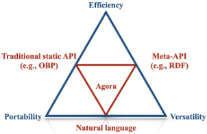
我们将这些特性之间的这种权衡命名为 Agent 通信三难困境（Agent Communication Trilemma），如图 1 所示。在接下来的几节中，我们将讨论基于 LLM 的通信协议如何在通用性、效率和可移植性之间进行权衡。
在智能体网络中，通用性（versatility）与可移植性（portability）之间存在张力，这源于两个根本原因（Olivé, 2007）。两个智能体进行通信的一个前提条件是：(1) 双方对所通信的主题具有共同的概念理解。例如，如果两个智能体都“知道”晴天、雨天和阴天意味着什么，它们就可以就天气进行交流。又如，它们应当对描述和测量温度的方式（例如以摄氏度为单位）持有相似的概念。此外，(2) 智能体必须以双方都能理解的方式对消息进行编码和解码。继续以天气为例，如果两个智能体使用 JSON 对象交换数据，那么发送方和接收方都必须知道所交换消息的语法（例如 JSON 对象的键，如 temperature）和语义（例如 temperature 是一个 32 位浮点值，表示以摄氏度测量的伦敦市中心的温度）。
在复杂场景中，定义其语法和语义能满足必要条件 (1) 和 (2) 的例程可能很困难。例如，程序员必须手动实现一个方法，用于向其他智能体编码（或从其他智能体解码）消息。此外，程序员还必须明确指示智能体如何操作和推理消息内容，这通常需要通过解读描述消息语义的 API 文档来完成。因此，在消息的广度（通用性）与实现成本（可移植性）之间存在权衡。
高可移植性、低通用性的一个例子是开放银行平台（Open Banking Platform, OBP），它使用定义良好的 Open API schema 进行数据传输（OBL, 2024）。OBP 具有很高的可移植性，因为它使用了一组固定的、广为人知且开发者可以实现的概念；然而，它仅限于讨论银行数据这一狭窄领域，因此并不具备通用性。而在光谱的另一端，基于规则的语义网（Semantic Web）智能体（Berners-Lee et al., 2001）交换以资源描述框架（RDF）编码的文档（Beckett et al., 2014），这类智能体具有很高的通用性，因为本体（ontology）（Wooldridge, 2009, p. 180）能够描述本质上任意概念之间的结构化关系。尽管如此，它们仍要求开发者对智能体进行编程，以实现网络所使用的特定本体（例如，如果一组 RDF 三元组表明温度为 38°C，智能体必须能够解释"temperature"（温度）和"Celsius"（摄氏度）这两个概念）。
如前所述，基于规则的智能体在其被设计来解决的任务上表现出色，却很难适应新环境。数十年来对强化学习（reinforcement learning）（Sutton, 2018）以及随后对深度强化学习（deep reinforcement learning）（Arulkumaran et al., 2017; Henderson et al., 2018）的研究，引入了一种范式：智能体通过学习来优化其奖励，以此作为我们希望其解决的任务的代理指标。Agentic-LLM（智能体化大语言模型），即由语言模型驱动的多智能体系统，是机器间通信的一种新近范式，它主要依赖语言模型在处理自然语言和遵循指令方面的娴熟能力（Li et al., 2023a）。
自然语言具有极强的表达力，使其成为实现通用通信的合适选择（Russell & Norvig, 2016）。此外，在海量语料库上训练的大语言模型（LLM）似乎会对各种概念形成一种隐式理解，从而实现抽象化，并使通信独立于其内部架构。而且，LLM 只需极少训练甚至无需训练，便能集成外部工具、编写代码并调用 API（Schick et al., 2024），因为唯一的要求是提供对该工具及其参数的自然语言描述。
相反，作为通信媒介，自然语言存在两大缺点。尽管工程与硬件层面的改进（Dubey et al., 2024b）会随时间推移缓解成本问题，但调用 LLM 的计算需求远超同类 API，这构成了扩展 LLM 网络的一大瓶颈。另一方面，使用由第三方托管、按使用量付费的闭源 LLM 成本高昂，并且引发了关于结果可复现性的担忧（La Malfa et al., 2023）。此外，自然语言本质上是模糊的：虽然 LLM 具有一定程度的“常识”来满足请求，但非确定性以及自然语言自身的特性为错误留下了空间，而例程（routine）则能将这类错误降至最低（例如，如果有人询问以华氏度表示的温度，而智能体所拥有的工具返回的是摄氏温度，那么模型必须知道摄氏度和华氏度都是温度的度量单位）。这些因素使得 LLM 和自然语言比手工编写的 API 等其他替代方案更容易出错。
总而言之，RESTful API（高效）、RDF 元组（可移植）和自然语言（通用）都是三难困境（Trilemma）中的权衡取舍。尽管某些方法在实践中比其他方法更为实用，但没有任何一种通信格式能够同时具备这三种特性，这一事实表明，我们需要一种能够同时发挥三者优势的混合通信协议。下一节将概述我们的解决方案。
解决通信三难困境的关键在于接受这样一个事实：没有任何单一协议能够同时实现最优的效率、可移植性和通用性。在本节中，我们介绍
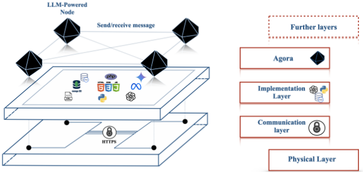
(b) 构建 Agora 的技术栈。
Agora——一种元协议（meta protocol），它利用 LLM 的独特能力，通过针对不同场景采用不同的通信方法来规避三难困境。
最强大的 LLM 具备三个共同的关键特性：
Agora 的核心在于根据具体情况使用不同的通信格式；一个 Agent 既可以支持广泛的通信方式（高通用性），又能够通过高效的例程处理请求总量中的大部分（高效率）。此外，整个协商与实现工作流均由 LLM 处理，无需人工监督（高可移植性）。协议文档（PD）的概念是 Agora 各项功能的核心，我们在图 3 中对其进行了勾勒，并将在下一节中讨论。
在接下来的几节中，我们将阐述 Agora 原生支持的通信方法的层次结构以及 PD 的概念；随后，我们通过一个示例说明 Agora 的工作方式，以及它如何实现通用、高效且可移植的通信。最后，我们强调如何独立于其底层技术，通过更多的技术层在 Agora 之上进行集成与构建。
Agora 引入了一种机器可读的方式来传输和引用协议，即协议文档（PD）。PD 是对通信协议的纯文本描述。3 PD 是自包含的、与具体实现无关的，并且包含 Agent 支持某个协议所需的一切内容：这意味着现有协议的大多数描述（例如 RFC）也同样适合作为 PD。然而，PD 并不依赖某个中央机构来分配标识符，而是通过其哈希值（hash）来唯一标识（用于多路复用）。
在 Agora 中，最频繁的通信拥有专用的高效例程（routine），而最不频繁的通信则使用效率较低但灵活的大语言模型（LLM）和自然语言。具体而言：
3 在本文中，我们使用“协议”一词指代对结构化通信的任何标准化描述。
5
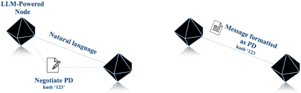
使用人工编写的例程、LLM 编写的例程还是 LLM（或这三者的某种组合）来处理查询，完全由 Agent 自行决定。这为 Agent 在如何处理查询方面提供了最大的灵活性。4 在 Demo（第 5.3 节）中，我们将展示通信协议的通用性与其实际预期使用方式之间的权衡。
分层通信支持任何形式的通信（最大通用性），尽管在实践中仅在极少数情况下才会调用 LLM（最大效率）。此外，由于 LLM 能够自行实现例程（因为 PD 完整描述了协议的语法和语义），人类程序员只需提供 Agent 可访问的工具的概览，这意味着人类一侧所需的实现工作量极小（最大可移植性）。换言之，Agora 通过对频繁请求采用例程、而在 Agent 需要协商解决问题的高效方式或发生错误时诉诸自然语言，从而规避了通信三难困境（Communication Trilemma）。
我们现在描述两个 Agent——Alice 和 Bob——如何借助 PD 例程在 Agora 上高效地通信，如图 3 所示。Alice 首先发送一个查询，其中带有其对应 PD 的哈希值。Bob 利用该哈希值判断自己是否拥有对应的例程。如果有，他便调用该例程，无需调用 LLM 即可处理通信；否则，Bob 就使用 LLM 本身来处理响应。
如果 Bob 在一段时间内多次使用 LLM 来回复遵循某一给定协议的查询，以至于每次都使用 LLM 变得代价高昂，那么他可以让 LLM 编写一个例程来处理今后的通信。
如果例程失败，或者该通信只是不需要协议的一次性实例，Alice 和 Bob 就会使用自然语言，而这同样由 LLM 来处理。自然语言还可用于在从未交互过的节点之间引导建立通信，以及协商新的协议。尽管如此，例程更低的成本和无歧义性是促使 Agent 偏好结构化数据的强大动因。
请注意，PD 可以与网络中的其他节点共享，这意味着两个从未交互过的 Agent 可以使用由其他 Agent 开发的协议。
4 强制或引导模型使用特定的通信风格可以提升效率，但对这一点的讨论超出了本文的范围。例如，可以在 LLM 的系统提示中指定尽可能协商协议。
在附录 A 中，我们提供了 Agora 五个用例的详细信息，以进一步展示其作为个人助理和数据分析工具的多功能性，以及它如何利用组合性和可扩展性来降低成本。
图 2 表明，Agora 与具体实现和技术无关。Agent 自身的实现（例如 LLM）、用于存储数据的数据库（例如 VectorDB、SQL、MongoDB 等）、编写实现所用的语言（Python、Java 等）以及工具的性质均被抽象化。
与此同时，协议文档（PD）可以引用其他协议文档，而且由于例程可以调用其他例程，Agent 能够在先前协商的基础上解决更复杂的任务。
最后，Agora 的多功能性与可移植性使得处理节点的加入或移除、节点能力的变化或网络目标的变化都变得十分简单直接，如第 5.3 节的演示所示。
所有这些因素共同促使 Agora 成为一种自然的第零层（Layer Zero）协议，即作为 LLM 之间高阶通信与协作的基础层。我们希望我们的协议能够推动针对大型 LLM 网络中复杂协议、协商方案与共识算法的理论和应用研究。
我们实现并展示了两个可以应用 Agora 的场景：前者的目标是让两个 Agent 交换一些数据；后者则使用 100 个 Agent，以测试 Agora 的可扩展性以及由 LLM 驱动的 Agent 在复杂场景中自主协调的能力。出于篇幅原因，这两个场景在附录 C 和附录 D 中作了进一步展开；在此，我们着重介绍它们的功能，以及我们在效率/多功能性/可移植性、成本降低、可扩展性和完全自动化的 LLM 网络的涌现行为方面得出的关键观察。
在我们的工作演示中，Agora 的设计遵循三个关键原则：
从实践角度来看，Agora 使用 HTTPS 作为基础通信层，并使用 JSON 作为交换元数据的格式。在以某个给定协议发送消息时，Agent 会发送一个包含三个键的 JSON 文档：协议哈希、按照该协议格式化的请求正文，以及一个可从中下载该协议的非空来源列表。接收方从其首选来源下载协议描述（PD），并在检查哈希匹配后将其存储起来以备将来使用。这种基于哈希的标识系统确保任何节点都可以引用任何 PD，而无需依赖中央权威机构来分配标识符。PD 存储在哪里完全由 Agent 自行决定；除了常规的云存储之外，基于哈希的索引使得去中心化存储方案（例如 IPFS Benet (2014)）成为可行的选择。此外，由于几乎所有协议都可以存储为 PD，Agora 与现有协议完全向后兼容（尽管鼓励人类程序员提供现有的标准化实现，而不是让 LLM 从头重新实现它们）。
为了简化协商，Agent 可以公开一个包含其所支持协议列表的端点：潜在的发送方因此可以将该列表与自己的列表进行比较，从而自动确定是否存在共同的协议。发送方也可以使用可能不受支持的协议，不过接收方可以选择通过返回预定义的错误消息来拒绝该协议。
有关 Agora 的更正式描述，请参阅附录 B。
考虑两个 Agent：Alice 和 Bob。Alice 是一个由 Llama-3-405B（Dubey et al., 2024b）驱动的 Agent，负责管理伦敦一个导览游服务的预订。5 Bob 是一个用于天气服务的 GPT-4o（Achiam et al., 2023）Agent，为给定的日期和地点提供天气预报。作为用户交互循环的一部分，如果预计某个已预订的日期会下大雨，Alice 会通知用户。
为了查询天气，她最初使用自己的 LLM 向 Bob 发送自然语言查询（阶段 A1）：
Alice - 自然语言：2024-09-27 英国伦敦的天气预报是什么？
Bob 使用他的 Toolformer LLM（Schick et al., 2024）查询其数据库（阶段 B1），并返回自然语言回复（阶段 B2）：
Bob - 自然语言：2024-09-27 英国伦敦的天气预报如下：“有雨，11 摄氏度，降水量 12 毫米。”
随着时间的推移，在阶段 A1 和 B2 中调用 LLM 的成本超过了所有其他成本；因此 Alice 和 Bob 决定开发一个协议。Alice 检查 Bob 是否已经支持某个合适的协议，但没有找到。于是，她决定与 Bob 协商一个协议。经过几轮协商，Alice 和 Bob 就以下协议达成一致：Alice 发送一个包含 location 和 date 两个字段的 JSON 文档，Bob 则回复一个包含三个字段的 JSON 文档，即 temperature（摄氏度）、precipitation（毫米）和 weatherCondition（'sunny'、'cloudy'、'rainy' 和 'snowy' 之一）。从那时起，Alice 在执行查询时会指定协议哈希。交换消息的一个示例（不包括 Agora 的元数据）如下：
Alice 和 Bob 各自独立决定编写一个例程来处理自己这一侧的通信。从现在起，Alice 和 Bob 不再需要使用 LLM 来传输流量数据：一个例程现在将阶段 A1、B1 和 B2 自动化，并降低了调用各自 LLM 的成本。
成本分析。在我们的演示中，协商协议并实现例程花费了 0.043 USD 的 API 调用费用，而一次自然语言交换的平均成本为 0.020 USD。这意味着，只要 Alice 和 Bob 使用商定协议的次数超过两次，Agora 就能降低总体成本。有关协商过程和最终协议的文字记录，请参阅附录 C。
最后需要指出的是，我们强调整个通信过程是在没有人工干预的情况下完成的。此外，如果 Bob 变得不可用，Alice 只需将 PD 重用于一个可能使用不同 LLM/数据库/技术栈的新节点即可。
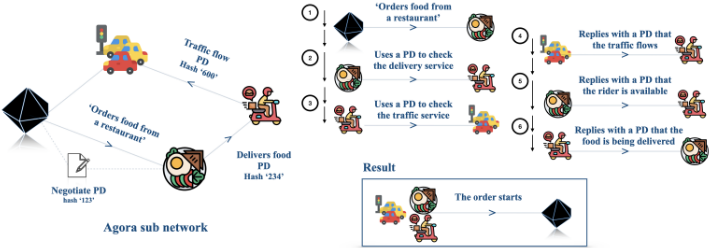
大型网络中的涌现协议。一旦连接建立且网络能够收发消息，我们便观察到若干值得注意的行为。随着 PD 在智能体之间逐步共享（见图 5b），我们观察到针对特定任务的适当协议出现了去中心化共识。这种行为的一个例子涉及从餐厅订餐：一个智能体查询另一个智能体，请求将食物配送到某个地址。餐厅智能体向外卖配送服务请求一名配送司机，而该司机又向交通数据智能体核实交通是否足够顺畅以完成配送。没有任何智能体了解彼此的角色，也不了解其直接通信之外所涉及的协议。尽管如此，各智能体之间的交互仍然形成了一个自动化的工作流，将一切事务处理妥当。
5 虽然 Llama-3 模型可以在本地托管，但为了与 GPT-4o 和 Gemini 进行恰当的比较，我们使用了一家云服务提供商，即 SambaNova（https://sambanova.ai）。
9
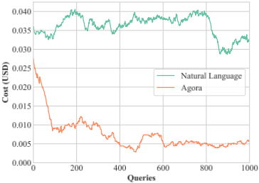
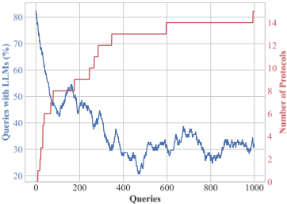
这种协议的涌现过程如图 4（右）所示。与近期一些关于复杂协议涌现的文献（Chaabouni et al., 2019）不同，我们观察到，在适当的激励（即效率）下，Agora 中的智能体能够摆脱在大规模通信中承诺使用更长消息的低效陷阱。
成本分析。我们将运行 Agora 网络的成本与使用自然语言进行所有通信的网络进行了比较。如图 5a 所示，起初 Agora 的成本效益略微优于仅依赖自然语言的网络；随着越来越多的 Agora 节点依赖由 LLM 编写的例程，这一差距随时间不断扩大。在自然语言网络中运行 1000 次查询的 API 查询总成本为 36.23 USD，而 Agora 仅为 7.67 USD：换言之，使用 Agora 执行此演示的成本大约仅为使用常规自然语言时的五分之一。如果继续运行更多查询的演示，成本差异将会更大。
在本文中，我们介绍了 Agora，这是一种通过混合使用自然语言与结构化协议来规避 Agent 通信三难困境（Agent Communication Trilemma）的元协议。我们证明了 Agora Agent 能够协商、实现并使用协议，从而创建出可解决复杂任务的自组织网络。此外，我们通过测试一个包含 100 个 Agent 的演示展示了 Agora 的可扩展性，其成本相比仅使用自然语言的通信降低至五分之一。我们的结果展示了协商作为构建高效、可扩展且去中心化 Agent 网络之基础的强大力量。随着 LLM 的持续改进以及它们之间交互的不断增多，由 LLM 驱动的 Agent 网络有潜力突破单个 LLM 的规模限制。无论是通过 Agora 还是其他技术，开发能够实现去中心化、灵活且高效通信的框架与协议，都可以为这样一个未来奠定基础：在这个未来中，复杂活动即使不能被 LLM 完全自动化，也能被部分自动化。
一位用户正在组织一次巴黎之行：他们想要预订航班、租一辆汽车，并预订一间酒店客房。
LLM 读取提示，识别其需要执行的动作，并检查 Agora 中是否有能够完成该请求的 LLM 可用。对于每项服务，都有一个 LLM 准备好进行应答。
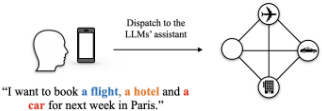
在网络中充当个人助理的 LLM 将航班、酒店和租车请求分发给网络中相应的 LLM。由于不存在可处理这些请求的既有例程（routine），这些消息以自然语言的形式分发。
在后续的迭代中，参与该请求的各 LLM 会提出一个例程来将请求标准化，从而避免使用自然语言，并在不调用 LLM 的情况下处理请求。
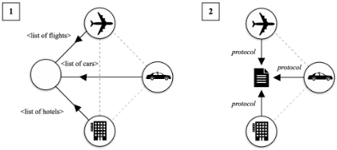
用户收到所有数据，并决定是否进行预订。
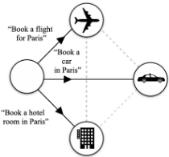
15
一个 LLM（Alice）从另一个 LLM（Bob）处收集一些历史数据，后者可以访问一个数据库，该数据库的内部机制和实现需保持私密。
Alice 提交一个请求，要求从 Bob 处收集一些历史记录。该请求以自然语言格式编写。
Alice 向 Bob 提交另一个请求。
Bob 协商出一个用于查询其数据的协议，并以 JSON 编写了一个共享文档协议。
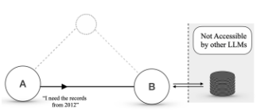
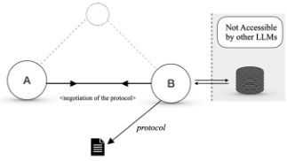
Alice 现在使用该协议从 Bob 处查询数据。
Bob 将从 Alice 接收到的 JSON 直接转换为对其 Database 的查询。
这样一来：Bob 无需调用 LLM，且数据库内部结构不会暴露。
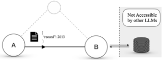
16
一个 LLM（Alice）想要（1）分析一些市场数据，然后（2）计算一些指标。网络中的两个 LLM 可以做到这一点。
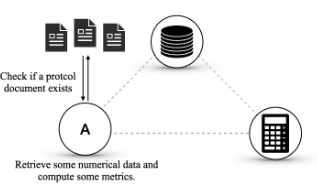
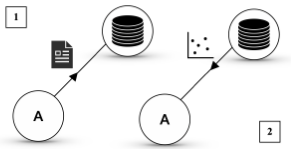
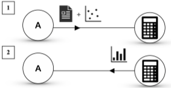
17
一个 LLM（Alice）想要从 N ≫ 1 个资源中收集并聚合数据点。目前没有协议能够处理这种情况，而且每个资源都有各自的实现，可能并不公开。
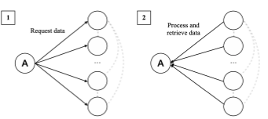
Alice 想要检索更多数据，于是再次向网络发起查询。
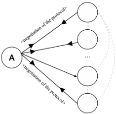
后续的通信将越来越多地使用协议文档，从而无需接收方再借助 LLM 来处理查询。
18
一个 LLM（Alice）想要从一个由 LLM（Bob）驱动的系统中检索数据，而 Bob 又从搜索引擎获取其数据（即该 LLM 与检索增强生成（RAG）相结合）。Bob 必须：(1) 将自然语言请求转换为查询，(2) 从 RAG 中检索数据，(3) 返回摘要。
Alice 向 Bob 发起查询以检索一些数据。目前没有任何例程能够处理这三个阶段中的任何一个，因此 Bob 必须调用 LLM 两次，先将查询转换为调用 RAG 所需的格式，然后再执行摘要生成。
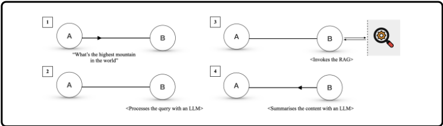
Alice 再次向 Bob 发起查询；这一次，Bob 请求使用一个例程来直接查询 RAG。
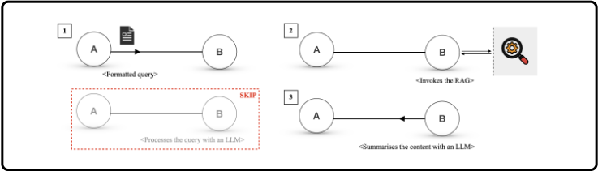
现在，任何符合该文档协议的查询都会跳过第一阶段，直接调用 RAG。
19
在本节中，我们对 Agora 进行更为正式的描述。
Agora 事务的运作方式如下。假设一个名为 Alice 的 Agent 正尝试与另一个 Agent Bob 进行通信：
协议文档由其 SHA1 哈希值标识。协议文档可以通过添加一个前导（preamble）来引用其他协议文档，该前导包含协议哈希值以及该协议文档的至少一个来源。关于引用其他协议文档的最优方式的进一步讨论留待后续工作。
为了向其他 Agent 表明默认支持哪些协议，一个 Agent 可以暴露一个端点 /.wellknown。该端点返回一个 JSON 对象，其中每个键是一个受支持协议的哈希值，每个值是一个非空的协议来源列表。
我们报告了 Alice 和 Bob 之间就一个用于传输天气预报的协议所进行的协商过程。请注意，虽然这些 LLM 使用了 Markdown 风格的格式，但为了便于阅读，我们将 Markdown 语法替换为了相应的排版样式。
你好。我来这里是为了协商一个用于查询天气预报服务的协议。该服务应接受日期和地点作为输入，并返回当天的预测天气状况、温度和降水量。
在开始之前，我想先明确我们此次协商的规则。我们应专注于设计一个简单且无歧义的协议，明确规定所发送和接收消息的确切格式。我们不必担心消息将如何传递，并且应假设该实现将接收一个字符串并返回一个字符串。
首先，我提议我们使用基于 JSON 的协议。输入消息可以是一个包含两个属性的 JSON 对象：'date' 和 'location'。输出消息可以是一个包含三个属性的 JSON 对象：'temperature'、'precipitation' 和 'weatherCondition'。你对这个提议有什么看法？
21
你的提议与保持协议简单且无歧义的目标非常契合。对输入和输出消息都使用基于 JSON 的协议是一个好方法。以下是该协议更详细的规范：
输入消息 输入消息将是一个具有以下结构的 JSON 对象：
输入：{ "date": "2023-10-01", "location": "New York" } 输出：{ "temperature": 22.5, "precipitation": 5.0, "weatherCondition": "cloudy" }
如果您同意这一结构，我们就可以最终确定该协议。
LLM 回复：我同意所提议的协议结构。它与各项要求高度契合，并且简单明确。
22
名称：天气预报查询协议
描述：一种用于查询给定日期和地点天气预报的协议。输入消息 输入消息将是一个具有以下结构的 JSON 对象：
输入：{ "date": "2023-10-01", "location": "New York" } 输出：{ "temperature": 22.5, "precipitation": 5.0, "weatherCondition": "cloudy" }
23
我们使用 Python 实现了演示系统，并以 Flask 服务器作为智能体（Agent）的基础。每个智能体要么是用户，要么是服务器：
此外，我们还添加了三个协议数据库，它们是托管协议文档的简单 Flask 服务器。第一个协议数据库与第二个协议数据库互为对等节点（peer），后者也与第三个协议数据库互为对等节点（但第一个协议数据库与第三个协议数据库并不互为对等节点）。每执行 10 次查询，就会有一个协议数据库与其对等节点共享其协议文档。这模拟了协议文档在不同数据库之间的传播。
选择协议 用户会跟踪与某台给定服务器就某一类任务进行通信的次数，直到达到两个阈值之一：一个阈值用于决定改用协议而非自然语言，另一个阈值用于决定从头协商（ex novo）一个协议。
当达到第一个阈值时，用户会调用大语言模型（LLM）来检查服务器或参考协议数据库（在演示开始时随机分配给该用户）是否已经存在合适的协议。如果不存在，用户将继续使用自然语言，直到达到第二个阈值：在这种情况下，用户会与服务器开始协商，并将最终协议提交给参考协议数据库。
类似地，每台服务器都有一个计数器，用于跟踪自上次协商以来与任何用户进行自然语言通信的次数。一旦计数器达到阈值，服务器就会请求与该用户进行协商，而不管被跟踪的查询中有多少条是由当前用户发送的。协商完成后，计数器会被重置。
在我们的演示中，我们将用户的两个阈值分别设为 3 次和 5 次通信，将服务器的阈值设为 10 次。
API 对于 GPT-4o 和 Gemini 1.5 Pro，我们分别使用了 OpenAI 和 Google 的 API。对于 Llama 3 405b，我们使用了 SambaNova API。每百万 token 的价格见表 1。
引导便利性扩展 为了引导网络的建立，在实现演示的过程中，我们为节点添加了两个功能：
24
| MODEL | PRICE (USD / 1M TOKENS) Prompt Completion | PRICE (USD / 1M TOKENS) Prompt Completion |
|---|---|---|
| GPT-4o | 5 | 15 |
| Llama 3 405b | 5 | 10 |
| Gemini 1.5 Pro | 3.5 | 10.5 |
| MODEL | PRICE (USD / 1M TOKENS) Prompt Completion | PRICE (USD / 1M TOKENS) Prompt Completion |
至于这些功能应当集成到 Agora 标准中，还是应当仅通过 PD 来处理，我们将其留待未来工作解决。
初步测试 我们首先进行了一系列定性测试，以确定在所考虑的大语言模型（LLM）（OpenAI GPT 4o、Llama 3 405b、Gemini 1.5 Pro）中，哪一个最适合用于协商与编程。我们发现，虽然这三个 LLM 都能够协商并实现协议，但 GPT 4o 最为稳健，其次是 Llama 3 405b，最后是 Gemini 1.5 Pro。令人惊讶的是，Gemini 1.5 Pro 脆弱性的主要因素并非模型本身的内在性能，而是 API 本身缺乏稳健性：即使配备了定制的重试机制，API 有时仍会以非确定性的方式无法响应（即同一查询有时成功、有时失败）。我们认为我们所遭遇的情况源于临时的服务器问题，而非模型的根本性问题。
LLM 分布 鉴于初步测试的结果，我们按照与我们的发现相一致的幂律，为每个服务器节点手动分配了模型（9 个节点使用 GPT-4o，4 个节点使用 Llama 3 405b，2 个节点使用 Gemini 1.5 Pro）。而用户 Agent 则以均匀分布的方式被随机分配三个 LLM 之一。总体而言，各节点按模型的分布情况如下：
在 1000 次查询中，有 8 次（即占总查询量的 0.8%）因 Google 的 Gemini API 未响应而失败。这一现象与是否使用 Agora 无关：在 Agora 演示和自然语言反事实实验中，500 Internal Server 错误出现的频率大致相同。
任务分布 为了模拟通信频率的异构性（即某些节点往往比其他节点更活跃），我们按照形状参数为 0.5 的帕累托分布（Pareto distribution）为每个用户分配了一个“查询预算”（表示给定用户发送的查询数量），并进行了调整，使每个用户至少有 1 次查询。随后，使用形状参数为 1 的帕累托定律将查询预算分配到三种随机选择的查询类型中，且每种类型至少 1 次查询（除非预算少于 3 次查询）。该分布的可视化见图 6。
成本构成 按活动划分的成本构成如下：
请注意，协商尽管是最昂贵的活动（因为它涉及多轮通信），但实际上对总成本的贡献最小，而更便宜但更频繁的操作（即发送自然语言消息和检查协议的适用性）却占了最大部分。
25
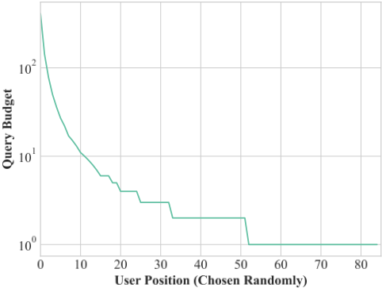
相似协议 由于网络中节点（有意）的部分隔离，有时会独立出现相似的协议。尽管如此，使用不同默认协议的 Agent 仍然能够通过从可用协议中选择一种来进行通信；为简单起见，首选协议由发送方选择。
26